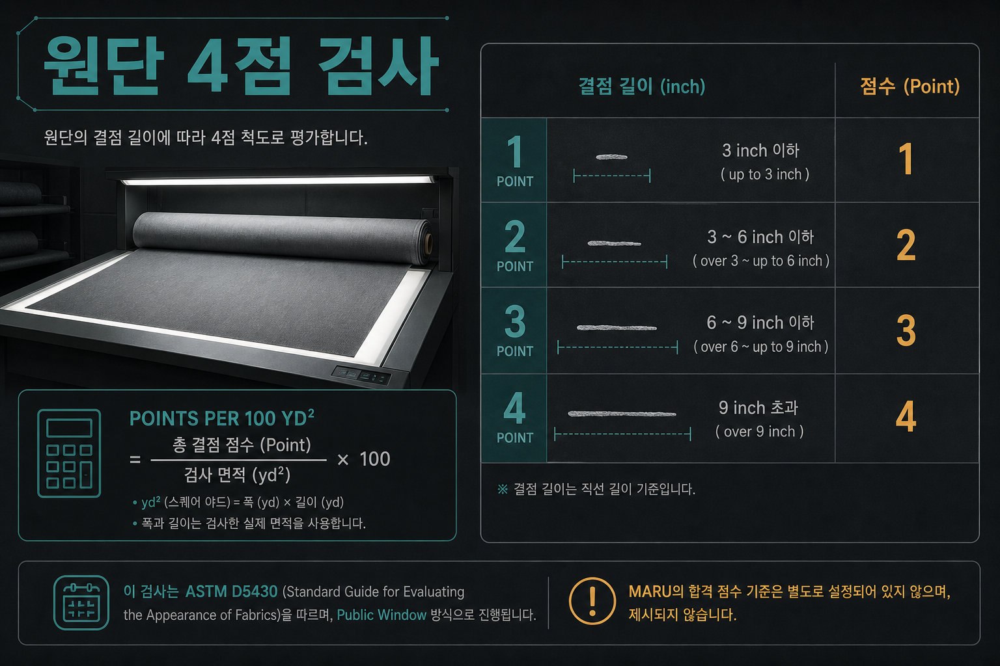
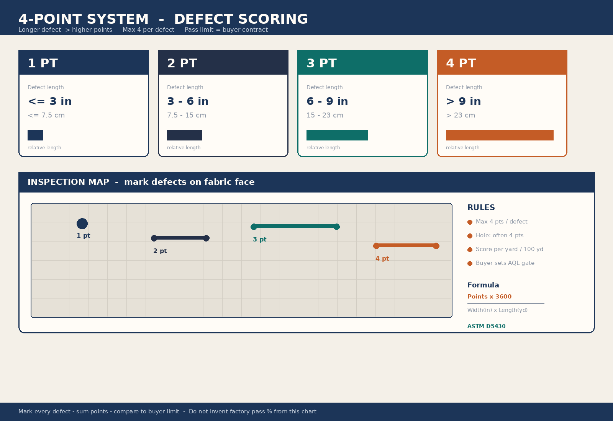
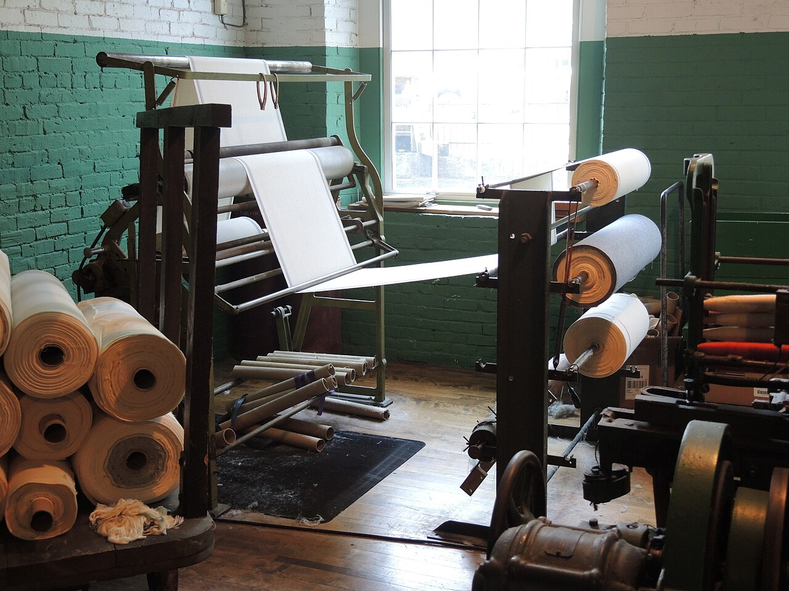

교육자료 · 원단검사
원단 검사
원단 롤 위에 있는 흠을 보고 점수를 매기는 공개 방식. 쉬운 말로 4점법. 표준 이름은 ASTM D5430. 합격 문턱은 바이어 계약.


왜 이 칸 왜
쉬운 말: 조명 밖에서 표면 흐을 찾고 점수를 매긴다. 재단 넣기 전 검문.
색 빠짐·수축·무게(GSM)은 실험실. 이 칸은 눈으로 보는 검사. 둘 다 필요.
공개 업계 예(~40, ~20-28) 있으나 공장 합격점이 아님. 바이어 스펙.
공장 합격점·검사 속도·보유 검사기는 이 페이지로 정하지 않는다. 작지·QC를 본다.
결함 길이로 점수 점수
쉬운 말: 긴 흐일수록 점수를 더 줍니다. 이름: 4점법.
ASTM D5430 공개 관행. 최장측(날 또는 폭).
| 결함 길이 | 점수 | English |
|---|---|---|
| ≤3 in (≤75 mm) | 1 | up to 3 in |
| 3-6 in (75-150 mm) | 2 | over 3 to 6 in |
| 6-9 in (150-230 mm) | 3 | over 6 to 9 in |
| >9 in (>230 mm) | 4 | over 9 in |
구멍(hole) 공개 자료에 두 후보. A ≤1 in=2 / >1 in=4. B 크기 무관 4. 표에 두 후보를 적고 바이어 스펙 확인.
한 야드 안 최대 4점.
하나의 점수는 4를 넘지 않는다.
100 yd² 환산 공식
| 항목 | 내용 |
|---|---|
| 공식 (기준) | Points/100 yd² = (Total points × 3600) / (width_in × length_yd) |
| Total points | 롤 전체 채점 합 |
| width_in | 폭 (inch) |
| length_yd | 검사 길이 (yard) |
| 3600 | 100 yd² 표준화 (36 in × 100 yd) |
이미지에 다른 식이 있어도 환산·정산은 위 HTML 표 공식만 쓴다.
공개 업계 예: 일반 ~40/100 yd², 프리미엄 ~20-28. 공장 합격점 아님. 계약 문턱.
니트 티 흔한 시각 결함 결함
공개 목록. 공장 코드표가 아니다. 작지·QC를 본다.
hole. 후보 A/B + 바이어 스펙.
slub.
contamination / stain.
oil stain.
streak / barre.
dropped stitch.
needle line.
narrow width.
bow / skew.
검사 때 같이 보는 것 더
수치는 스펙 시트.
시각과 별개. 공차는 스펙.
수치는 스펙 시트.
정량 수치는 스펙.
흐름 흐름
식별·롤번.
표면 시각.
1-4 + 캡.
(Total×3600)/(W×L).
계약 문턱.
통과분만.
원단스펙 칸과의 관계 가름
원단스펙은 표 읽는 법. 이 칸은 롤 시각 검사. 둘 다 필요. 하나가 다른 하나를 대신하지 않는다.
현장말 · 교육말 현장말
| 현장말 | 교육말 | English |
|---|---|---|
| 기스 | 흠집 / 결함 표시 | scratch / blemish |
| 간지 | 견본 / 승인 샘플 | swatch / hand sample |
| 나오시 | 수선·수정 | repair / rework |
영상 영상
교육용 영상은 이 페이지에 아직 없다.


주의 주의
이 페이지 숫자로 공장 규격을 정하지 않는다. 작지·바이어 스펙을 본다.
퀴즈 확인
시각 결함 1-4점 채점 후 100 yd² 환산. 랩과 별개.
≤3 in = 1점, 3–6 = 2, 6–9 = 3, >9 = 4.
두 후보 표시 후 계약 확정.
Points/100 yd². 환산은 HTML 표 공식.
공장 합격점 아님.
표면 vs 공학. 둘 다 게이트.
야드당·단 결함 모두 최대 4.
../원단스펙/index.html
기스=흠집, 간지=견본, 나오시=수선/수정.
채점 → 환산 → 계약 판정 후 투입.